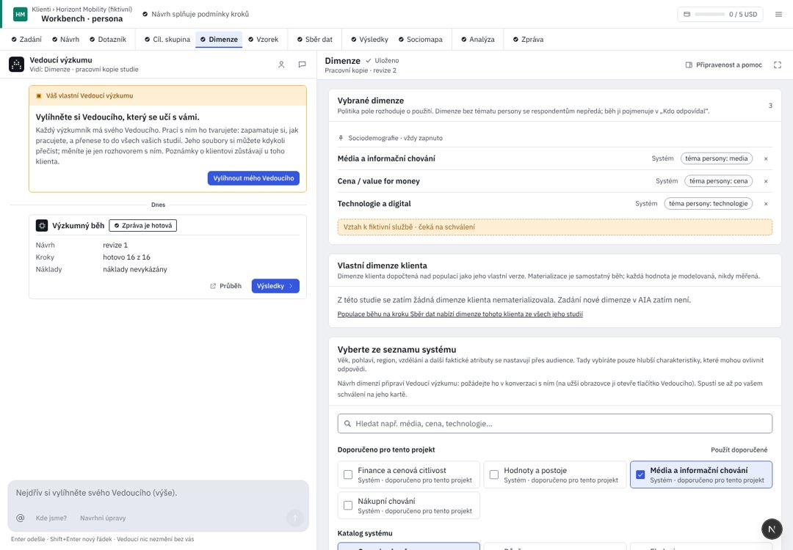

Klienti / Pivovar Zlatá Hora
Vnímání značek ležáků 2026
Vedoucí navrhuje 1 změnu · nic se nezmění, dokud ji nepřijmete
Přidat dimenzi Reakce na reklamuProč: VO3 se ptá na atributy, které lidé znají hlavně z reklamy.
Dimenze říkají, podle čeho AI respondenti odpovídají: kromě sociodemografie jejich postoje a zvyky. Velikost vzorku je teď na Vzorku.
01
Co dimenze podpoří
výzkumné otázky z Návrhu{{v.id}} {{v.t}}{{v.by}}
02
Dimenze respondentů
{{dimCount}}Sociodemografievždy zapnuto: věk, pohlaví, kraj, vzdělání · podpoří VO2
{{d.l}} · {{d.src}}{{d.feeds}}
{{r.l}}vaše žádost · čeká na schválení ve Znalostech klienta
Přidat dimenzi
{{c.l}}{{c.feeds}}
V katalogu není „{{q}}“Můžete o ni požádat. Žádost jde do Znalostí klienta ke schválení a dimenze se dá použít, až ji schválí.
03
Vlastní dimenze klienta
Preference nefiltrovaných pivcíl 0,32 · dosaženo 0,31 · v toleranci
{{ownNote}}
UX kritika · Dimenze
Krok volí, podle čeho AI respondenti odpovídají. Dnes v něm sedí i velikost vzorku, kterou čte až Vzorek, s doporučením spočteným v prohlížeči. Kód d5d36b25; R/ = apps/web/src/components/rehome/research/.
Dnes v AIA (workbench, 1440 px)

{{c.l}}{{c.t}}
- {{x.t}}{{x.a}}